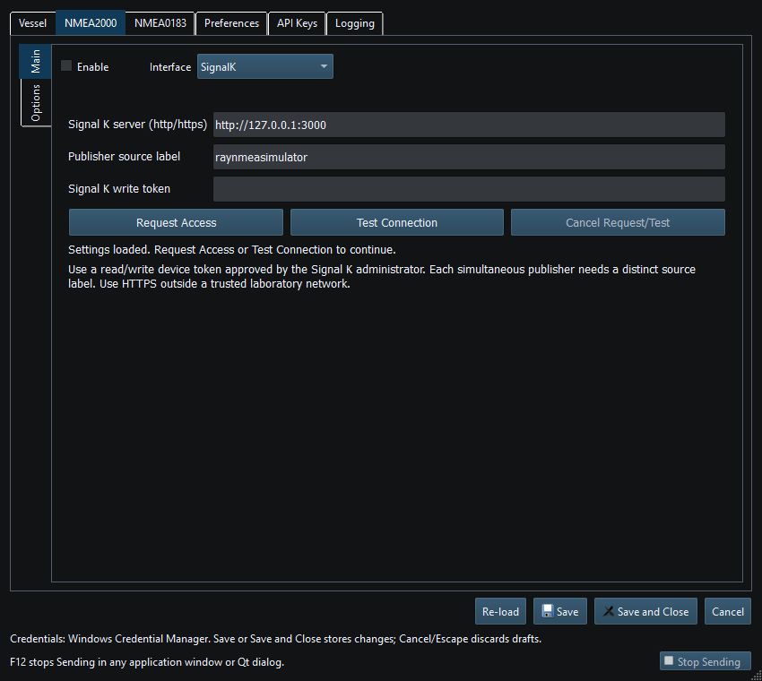

Signal K output publishes supported measurements as deltas through the configured server. It is not raw CAN transport, a general PGN tunnel or a subscription input into Viewer.
Use an appropriate read/write device token approved by the server administrator. A saved token is not proof that access is still valid. Do not embed credentials in the URL or paste them into a Layout, screenshot or log. Use HTTPS outside a trusted laboratory network.
The publisher maps supported NMEA/instrument fields to Signal K measurements. Not every message or property has a mapping. Self measurements and explicitly identified supported AIS target deltas have different identity handling; this is not arbitrary received-data forwarding, PUT support or subscription.
Read authorization/connection/retry status. The server's own data browser or another permitted client is the independent check of received values. Correct local widgets plus a healthy WebSocket are not proof every field was published.
Stop/F12 ends publication authorization and pending lifecycle activity. A reconnect/readiness transition must not be confused with a new user's grant. The application does not implement Signal K subscription into Viewer.

Figure 71. Signal K endpoint and access settings in Setup. Click to enlarge.
NMEA2000 Overview · NMEA0183 Overview · Network NMEA2000 · SocketCAN · CANable SLCAN · Waveshare USB-CAN-A · Actisense NGT-1 · Device Discovery and Diagnostics · Connection Troubleshooting · Enable, Dispatch and Sending · Route Overview · Engineering Units